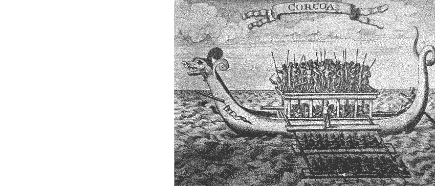
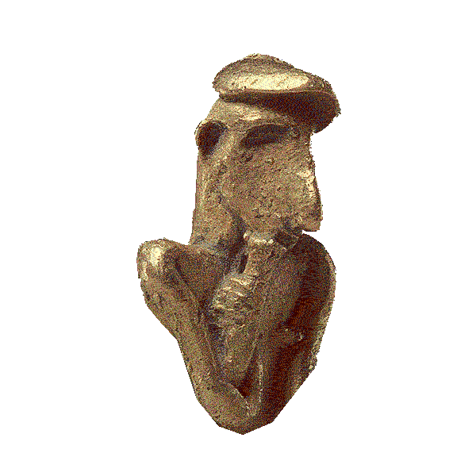
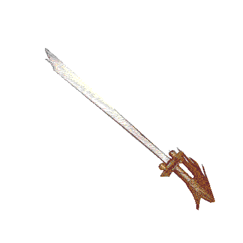

Click to begin the sound of descent.
As you scroll-dive, you may pause to hover.
In the beginning
all searching eye for truth
in the computation of time
we entered by storm, preserved by plunder
threatened to be put by the sword
the parallel betwixt us
my silence, perhaps, may be misconstrued
I will fade away forever. again.